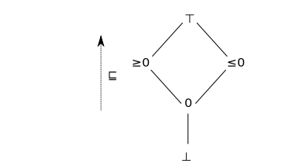

神游窈冥昏默之乡是一件严肃的事。
全是私货，个人理解。
什么叫抽象呢？其实是 “减少描述符号，从而减少约束导致值域扩大” 的过程。譬如：
{1,2,3} 是很具体的，可以取 1,2,3。然后我们就可以对其抽象一下为[1,3]，此时只剩下了两个数（两个端点），但范围扩大了不能精确描述值的选取了，但取值仍是符合抽象的条件（在 [1,3] 内）。我们可以继续抽象为"+"，直接抽象成一个符号，表示取值都是正数。这样符号更少了，也导致范围更大了。
- 我们用一个完全格 (complete lattice) 去描述一个 concrete world：
(P(I),⊆,∪,∩,∅,I)
其中，I 是讨论的取值范围，譬如可以是N,Z,N∗ 等等。而幂集上的子集关系就是一个天然的偏序。显然它是一个完全格。
- 然后我们也用一个完全格去描述一个 abstract world：
(B#,⊑b#,⊔b#,⊓b#,⊥b#,⊤b#)
而且需要有一个单调的 concretization function 去描述它的具体化：γb:B#→P(I)。
-
以上只是初步定义。为什么要抽象？实际上，程序语义是可以近似和逼近的。我们其实要求抽象是 concrete world 的一个 “sound abstraction” 时，才比较有实用意义。假如我们就讨论简单的算术表达式这件事情。一个 concrete domain 上的语义如下：
E[V]ρ={ρ(V)}E[c]ρ={c}E[[c1,c2]]ρ={x∈I∣c1≤x≤c2}E[−c]ρ={−x∣x∈E[c]ρ}E[e1+e2]ρ={v1+v2∣v1∈E[e1]ρ,v2∈E[e2]ρ}E[e1−e2]ρ={v1−v2∣v1∈E[e1]ρ,v2∈E[e2]ρ}E[e1×e2]ρ={v1×v2∣v1∈E[e1]ρ,v2∈E[e2]ρ}E[e1/e2]ρ={v1/v2∣v1∈E[e1]ρ,v2∈E[e2]ρ}
然后一个 sound 的 value domain abstraction 要求是什么呢？书上给出如下：
-
c∈I→cb#∈B#,s.t.c⊆γb(cb#)
-
c1,c2∈I∪{±∞}:[c1,c2]→[c1,c2]b#,s.t.[c1,c2]⊆γb(cb#)
-
−b#:B#→B#,s.t.∀X#∈B#,{−x∣x∈γb(X#)}⊆γb(−b#X#)
-
+b#:B#×B#→B#,s.t.∀X#,Y#∈B#,{x+y∣x∈γb(X#),y∈γb(Y#)}⊆γb(X#+b#Y#)
加减乘除和交并这些二元运算符同理。
当然普通人例如我还是理解不了这一大堆奇怪的要求的，于是我决定把它实例化。
-
令I={−1,0,1}，也就是我们所有的取值都只考虑这三种。我们用符号来抽象它。即 the sign domain。构造 sign domain：
B#={⊥b#,⊤b#,0,(≥0),(≤0)}
一共就 5 个元素。再构造B#上的一个偏序关系：

这里对这个关系可以理解为抽象范围的包含关系。（显然≤0 是包含 $<0 的。) 而最大元理解为 "unknown"，即所有元素都满足。而最小元理解为不可满足。
然后构造γb 映射：
γb(⊥b#)=∅γb(0)={0}γb(≥0)={c∈I={−1,0,1}∣c≥0}={0,1}γb(≤0)={c∈I={−1,0,1}∣c≤0}={0,−1}γb(⊤b#)=I={−1,0,1}
然后构造运算。其实运算就按照普通理解的方法构造：(≥0)+b#(≥0)=(≥0)，(≤0)+(≥0)=⊤b#，⊤b#+0=⊤b#，⊥b#+(≥0)=⊥b#… 都不用特殊说明。
-
然后我们来验证这个 abstract domain 是 concrete domain 的一个 sound abstraction。
- 对于取值集合，很容易就找到对应的 abstraction。譬如{0,1}→(≥0)，{−1,1}→⊤b#，{0}→0。显然就有c⊆γb(cb#)。
- 对于[c1,c2]，也很容易找到对应的 abstraction。譬如[−2,1]→⊤b#，[1,2]→(≥0)，[0,0]→0。很显然也有[c1,c2]⊆γb([c1,c2]b#)。
- 然后加减整除，其实都挺显然有{x+y∣x∈γb(X#),y∈(Y#)}⊆γb(X#+b#Y#) 的。
-
其实看了例子就好理解一些。总之，我理解为 “抽象” 足以描述 concrete world 中的关系和运算，使得在抽象中运算后虽然会有约束损失，但仍然是正确的。
-
最后注意，[c1,c2]b#,X#这些其实都是B#中的元素，只是对应不同的具象。
X={1}∈P(I)X#=(≥0)∈B#[0,2]={0,1}∈P(I)[0,2]b#=(≥0)∈B#
所以其实类型都是相似的。
-
说了半天还是抽象。